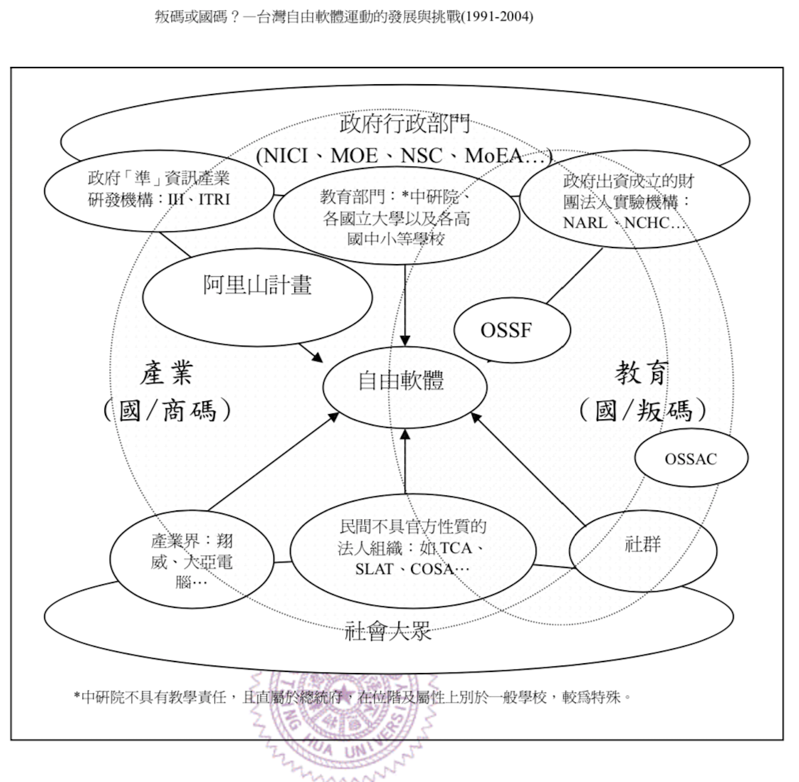

網路社群與「先禁」政府的戰爭研析與公眾參與建議報告 - 以資訊科技社群與科技政策為例 （草稿）
Table of Contents
List of Tables
1 封面
計畫主持人：陳信屹 研究助理：簡韻真、張雅鈞
2 中文摘要
「台灣的科技治理架構雖存在各型大小會議，卻仍有三個層次的『溝通缺口』：一、誰能出席、誰被排除的『代表性缺口』；二、與會人士知識/ 語彙的落差；三、不同參與者，在議程設定與結論綜整時的權力不對等。」（曾柏文，2008）。此一現象相信並非單只出現在科技治理領域，2014 年服貿爭議爆發引起大大小小的遊行陳抗、馬政府因而召開經貿國是會議回應溝通，並增加了許多網路參與機制讓民眾參與公共政策討論，甚至成立 JOIN 平台，然而前述三個「溝通缺口」若沒有本質上的改變，這些大小會議的網路參與機制將只是徒留形式甚至於治標不治本。爰此，本研究針對前述「代表性缺口」以及「與會人士知識/與會的落差」做出更進一步的發問，探討在傳統產官學研的分類之外，「 網路社群是否也該在政策預評估（pre-evaluation）時期以政策利害關係人（policy stakeholders）看待。若是，又該如何指認對話，事先獲知政策推動時可能的反應以降低執行階段的衝突 」提出初步看法。由於研究資源限制，本研究選擇以資訊科技社群為例進行研析，發現政府與資訊科技社群之間存有三個層次的落差 : 一、資訊來源不同的導致的落差; 二、做事習慣不同導致的落差 ； 三，行政部門「認知匱乏」造成的溝通落差。最後根據結果建議行政部門應當：一、 以利害關係人管理方式進行政策預評估，並提出網路利害關係人指認方法建議。 二、 持續向民眾推廣現有參與政治或公民參與機制。 三、加強說明政策背景已解決知識落差。 四、正視行政部門的過勞議題。
協同治理; 公民參與; 開放政府
3 英文摘要
4 前言
如果你是人，溫斯頓，那你就是 最後一個人 了。你那種人已經絕跡；我們是後來的新人。你不明白你是孤家寡人？你處在歷史之外，你不存在。
– 喬治·歐威爾（George Orwell）
1970年代後，公共政策學者開始修正鐵三角理論，認為實際的政策過程並非如鐵三角理論所描述的封閉，實則有許多公私組織參與其中（羅清俊，2011），台灣亦有學者以全民健保政策改革為例，針對「政策利害關係人」（William N. Dunn，1994）形成的網路關係進行研究，發現「當政策屬於規劃階段，不論就政策的資訊獲得、交換或是議題的資訊來源，均能形成由公、私與第三部門所組成的資訊網絡。行政部門不再被認為擁有獨占的專業知識，必須依賴私部門與第三部門提供政策資訊與諮詢，同時成為政策夥伴。」（劉宜君、陳敦源、蕭乃沂、林昭吟，2005），但「由於顧主導向的政策研究，往往未能或是沒有興趣指認『沉默的輸家』」（陳敦源、劉宜君、蕭乃沂、林昭吟，2011），一旦正式會議未處理政策弱勢的代表性議題，公眾只要沒有透過培力或動員來建構其代表性基礎，將在會議中缺乏議事資本，也導致決策缺乏草根性和正當性。（羅凱凌，2017）。
今日，網路原生世代（Tapscott，1988; Prensky，2011）以社群為網絡進行串聯、以科技為工具參與政治，透過 Facebook、Twitter 等各種數位社交軟體發聲，吸引其他人參與討論其關心的議題，形成「議題網路」（Hugh Heclo，1978），進而從虛擬走向實體，透過體制外的手法對政策產生影響（Clay Shirky，2005）。資訊科技社群更是在 2012 年發生質變，衍生出「g0v」這樣的網路社群，透過如g0v年會、黑客松、提出和運作各種與公民社會相關的專案，召喚其他公民一起公民參與（例如各種「開放政府」的成果），部分參與者更是從體制外走進體制內改革。但歸根究底，「g0v」的出現，實乃因工程師出自於對政府決策的不滿 （鄭婷宇，2017）。2014 年太陽花學運爆發，馬政府召開經貿國是會議回應，並增加了許多網路參與機制，在網路上蒐集執行上的意見參考，更邀請網路意見領袖實體與會參與，但在代表性上遭遇到困難。「『網路』不像產官學或社運界，是某種獨立的功能群體；實際上『網民』來自社會各界，往往具備其他身分。將網民想像成某個不同群體，先天邏輯就有問題。」（曾柏文，2014）。
「台灣的科技治理架構雖存在各型大小會議，卻仍有三個層次的『溝通缺口』：一、誰能出席、誰被排除的『代表性缺口』；二、與會人士知識/ 語彙的落差；三、不同參與者，在議程設定與結論綜整時的權力不對等。」（曾柏文，2008）。此一現象相信並非單只出現在科技治理領域。各種會議的參與誘因、議題脈絡釐清、議事程序、「政策利害關係」人多元性，以及政府如何看待民眾參與於公共政策的決策的影響力，如提供資訊、諮詢、協力或賦權等等，若未有本質上的改變，這些大小會議的網路參與機制將只是徒留形式。值此國家大力推動數位轉型（digital transformation）之際，不管是「公民參與」還是「政治參與」的網路參與機制必須也應當叩合網路原生代的慣習做出改變。
因共同興趣、利益群聚的網路社群皆有潛力發展成為新興產業（Taylor Pearson，2016; 林芳本，2013），若只是因為會議形式設計不妥成為政策弱勢，使得屬於「破壞性創新」（Joshua Gans，2017）的專家意見無法進入政策過程，殊為可惜。
為此，貫穿本研究的核心問題是「 網路社群是否也該在政策預評估（pre-evaluation）以「政策利害關係人」看待。若是，又該如何指認對話，事先獲知政策推動時可能的反應以降低執行階段的衝突 」。由於研究資源限制，本研究先以資訊科技社群關心議題圖像為例，嘗試解析行政部門與網路社群的文化分歧之處。最後，根據研究成果提出公眾參與操作建議。
本研究完整的「Source」可從 https://github.com/SenseTW/ArrTMDReport 取得，內容除特別標註外，均採「姓名標示-相同方式分享 3.0 台灣 （CC BY-SA 3.0 TW）」授權公眾使用。 如有特別標註者依其說明授權。本研究附加檔案或為其他著作人所有，已力求詳細標註出處，請依原作聲明方式利用。
5 研究目的
依據上述背景與核心問題，本研究目的分為兩個層面，簡述如下:
- 綜合整理分析至少 50 個活躍資訊科技社群自 2016 年到 2018 年的文本 (text) 以整理出關心議題圖像。
- 針對資訊科技社群關心議題、議事文化探討資訊科技社群與政府的爭點為何，並提出公眾參與操作與建議。
6 研究假設
我們是地下樂團，把所有人拉到地底下，我們就是主流了。
– 蘇打綠。
 「資訊科技社群究竟是哪些人？」此一大哉問若拿去問所謂「資訊科技社群」的人，相信許多人難以回答。筆者雖屬於其中一份子，卻也難以回答「我們」是誰，然而無庸置疑的是：「我們」存在。 因此筆者試圖追朔過往歷史，發現資訊科技社群應該是由台灣過去幾十年所發展出來的產學研網絡、以及自由開源軟體1社群所交織出來的。這是因為「自由軟體被成功地轉譯(translate)成國碼，依據各自的需求，透過各自的網絡關係，操著適宜的語言，將自由軟體盡情地轉譯：對於自由軟體產業的人而言，透過自己的網絡關係，不斷地召喚國家，『free software』=『free the nation』而『open = chance』；而對於教育議題的人而言，『free software』 = 『teach you freedom』，而『open = equal、share』的教育理念，並且『建立自主的資訊產業」』以及『建立自主的資訊教育』這兩個國家都是無法推擋的理由」（葛皇濱，2004）。過去自由開源軟體社群活躍份子為了想辦法將自由/開源軟體導入到另外的新戰場，學著瞭解組織經營以及組織管理，降低學習門檻；學著分工以及整合；學著如何組織志工舉辦大型研討會推廣技術、專案、理念2。於是活躍份子一個一個成為行動者（agent），隨著自己注意力的轉移跨界將「自由/開放」文化轉譯（translate）到其他領域的「科技社群」，例如農業、教育、藝術、音樂等等。 是故，本研究均假設其他領域的「科技社群」部分核心成員與自由開源軟體社群成員高度重疊或有高度聯繫。圖（「國碼/商碼 VS. 國碼/判碼並列圖」，葛皇斌製）所描繪的網路，在 2005 年後隨時間變化向青少年族群、政治族群、社運族群、文化族群、他國產業的方向擴大，惟此非本研究重點，略過不談。
7 研究方法
7.1 研究架構
\(J1 \land J2 \land J3 \implies C1\)
- 小結一： 資訊科技社群是政策分析跟「公民參與」的「沈默輸家」。
Table 1: 小結一命題表 符號 命題 依據 P1 雇主導向的政策分析缺乏興趣或沒能力指認「沈默輸家」。 陳敦源、劉宜君、蕭乃沂、林昭吟（2011） P2 資訊科技社群對於「政治參與」、「公民參與」機制不熟悉而成為「沈默輸家」。 本研究發現 J1 資訊科技社群的意見沒被納入考量分析會在政策制定後利益受損。 \(P1 \land P2\) - 小結二： 資訊科技社群在會議中無法有足夠的代表性產生議事資本。
Table 2: 小結二命題表 符號 命題 依據 Q1 資訊科技社群與行政部門「採信來源不同」。 本研究發現 Q2 資訊科技社群與行政部門「做事文化不同」。 本研究發現 J2 資訊科技社群在會議中無法有足夠的代表性產生議事資本。 \(Q1 \land Q2\) - 結論一： 政策過程中缺少「資訊科技社群」這類的「網路社群」意見，造成科技政策規劃「落後」引發衝突。
符號 命題 依據 J3 資訊科技社群的「專家」比「產官學研」的意見更有前瞻性。 本研究發現 C1 政策過程中缺少「資訊科技社群」的意見，造成政策規劃「落後」引發衝突。 \(J1 \land J2 \land J3\)
7.2 文化研究
「文化研究關心的是日常生活中的意義與活動。文化活動是指某個文化中的人們如何去進行某些事情（比如說觀看電視或外出用餐），而他們之所以這樣去進行事情則與某些文化意義有關。在文化研究的脈絡下，「文本」（text）這個概念不只是在講書寫下來的文字，還包括了電影、攝影、時尚或髮型；文化研究的文本對象包含了所有有意義的文化產物。」（Wikipidia: 文化研究）。 本研究採用之「文本」為社群在網路中共創、有意義的文化產物，包含網路討論串、新聞、共筆、演講、軟體等等。
- 收錄原則
- 社群收錄原則
初步設定條件為符合下列條件之台灣相關科技社群或組織，特殊狀況可說明：
- 創立一年以上。
- 兩年內有公開活動或討論文章。
- 社群大型活動收錄原則
- 由社群主辦。 以 PyCon 為例：不管是講者、工作人員、聽眾全部都要付報名費。
- 交流為重，60% 交朋友、40% 聽演講的活動。
- 來源的判斷原則
- 一手來源是為事件特定狀態直接提供證據的文本或者人；換句話說，就是最靠近你正在書寫的事物的消息來源。這個術語通常指事件參與者或者事件觀察者創作的文本。它可能是一份官方報告，一封原始書信，一份記者親歷事件的報導，或者一份自傳，統計數據也被認為是一次文本。
- 二手來源是是摘要、引用、轉述、總結一手來源的文本。。
- 社群收錄原則
- 建立活躍社群清單
- 統計各社群關心議題
- 盤點出每個社群的主要數位討論空間。時間範圍 2016 年到 2018 年的熱門新聞相關討論串。
- 每個社群討論空間要找出 10 個熱門跟社會議題新聞或政策有關的討論串。
- 摘要各相關議程重點問題。
- 歸納分析社群關心議題
從資料（data）、資訊（information）、知識（knowledge）、文化（culture）生產與消費的角度探究事件背後網路社群與政府的價值之爭。
7.3 訪談調查法
訪談法透過與受訪者面對面之交流，獲取內容訊息的分析方法，特別是針對受訪者親身經驗之故事特別有用。 本研究主要透過此方法了解不同領域對於政策過程的意見，獲知政府與資訊科技社群的溝通缺口，訪綱見附錄。
// 完稿會跟被訪者確認是否公開。
| 代號 | 時間 | 形式 | 選擇原因 |
|---|---|---|---|
| NPC1 | 經貿國是會議。政府與社群中介者。 | ||
| NPC2 | 經貿國是會議。政府與社群中介者。 | ||
| NPC3 | 族繁不及備載 | ||
| NPC4 | 政府與社群中介者。 | ||
| NPC5 | 積極公民 | ||
| NPC6 | 社群倡議 | ||
| NPC7 | 智庫分析師 | ||
| NPC8 | 智庫分析師 | ||
| NPC9 | 智庫分析師 | ||
| NPC10 | 基層公務員 | ||
| NPC11 | 政府約聘 | ||
| NPC12 | 曾任職政務官 | ||
| NPC13 | 現任職政務官 | ||
| NPC14 | 現任首長幕僚 |
8 研究限制
- 這種透過生活史作為社會圖像的起點與核心方法仍有限制，「建構社會圖像之方法並無固定方式之依歸，而只是尋繹其中之可能關聯，盡力貫通各種層面使之連結成有機圖像，詮釋的結果常常依賴研究者的知識跟經驗。」（王宏泰，2011）。
- 本研究多數取用之文本 （文化研究的脈絡下的 「Text」） 皆為網路連結頁面，可能在未來失效。 對於 Web Archiving 此議題，目前全世界已經有一些 Web Archiving Initiatives 在進行。 讀者若發現連結失效，可嘗試利用 Web Archive （https://web.archive.org/ ）、Wayback Machine （http://archive.is/） 此類服務搜索。
- 本研究盤點之社群跟活動不可能窮盡，此乃因社群跟活動、可能隨時分拆、重組或創建。
8.1 研究者的位置
筆者自 2002 年因使用 Linux 開始參與自由軟體文化運動，2012 年參與 g0v 開始關心公共議題自今。2014 以 g0v 社群參與者身份參與經貿國是會議高雄場。
9 文獻檢閱
9.1 網路社群
自 2014 舉辦的經貿國是會議 以來、公部門們常常提到「科技社群」，但似乎並無精確定義，按筆者個人經驗，目前只見 2017 年的開源人年會中的南部社群與法人協作演講中提到「科技社群」四字，而從科技部的相關計畫：科技社群建構：新興科技產業相關議題之研究，可發現學者所想像的社群是某種由上而下建構的平台，而非由下往上自組凝聚的人民團體。因此接下來本研究會試圖釐清所謂的「科技社群」為何，另外需特別強調的是，這裡提及的社群 （Community） 一詞與社區營造裡的社區 （Community） 為不同指涉對象。 // 要再修這邊寫有哪幾種網路社群，須包括電商的定義、商業公司的定義、IGF 的定義、自由軟體社群的定義，還有釐清網軍跟寫手的差別。另外也要釐清公民科學。
首先，沒有人可以代表「網路」，在網路上每個人都是各自獨立的節點，只是有些人是比較大的節點，認識更多人、傳遞更多資訊，通常被稱之為意見領袖（Key Opinion Leader）。請注意，這邊的意見領袖不代表他想做什麼，下面就會有網軍群起跟隨，KOL指的比較偏向網路上某一社群內有影響力的人，他比較像是一個跟社群溝通的窗口，他是因為他在社群內的專業與參與付出而有影響力且受人信任，但須注意社群內也常會有不同意見。
社群又是什麼意思？不同於傳統公協會或是人民團體，網路實踐社群因為興趣和共同關注議題而聚集，成員可能跨地域、跨職業，也沒有成立正式的法人組織，但是這個社群因為共同的承諾參與、默契、工具凝聚在一起，持續在網路上活躍，而成員對這個社群產生了歸屬感。 [1] 例如攝影同好、動漫社群、寫程式的社群，可能在不同的論壇、通訊工具上討論相關話題，分享新知與作品（sources）。
一個人在這樣的社群的影響力是建立在他為社群貢獻過什麼事蹟，因此網路的暱稱 ID 比本名還真，基本上可以算在江湖 (community) 的藝名 (nickname)，任何職銜在此也不重要，大家認可的是該人做過的貢獻，而不是他是否為理事長、發起人。社群所形成的文化，也就是所謂的默契，會讓社群的意見領袖，受到一定程度的規範，若是意見領袖打破這個默契，社群就可能不再支持他的意見，這也是為什麼在後面的章節我們可以看到科技社群會很希望專家會議內容公開，因為他們無法代表他們所屬的社群，基於跟社群的默契，他們需要讓社群裡的更多人可以一同參與跟政府的討論並給意見。
值得注意的另一件事，是同一議題會有不同意見的社群，不能夠希望找到一個社群就天下太平無其他意見，或是能夠找完所有網路上的社群，因為只要有任何人不同意既有社群的意見、承諾，馬上就可以在網路上開新的社群，因此與其建一個社群清單，不如讓社群可以主動找到你，或是有需要的時候可以迅速找到關鍵活躍社群。
每個社群習慣的討論平台也會不同，可能在 Facebook、Instagram、Line、Telegram、Twitter、Slack、IRC、PTT 等不同的工具平台上，要讓社群使用者遷移討論平台非常困難。例如大家都不太會去政府的網站上留言、參與討論，而是傾向在社群既有的平台上討論。在徵詢社群意見的時候，需要在其習慣的工具平台上，以相同的默契與承諾進行協作。
這裏簡單介紹兩種網路社群的生命週期，一種是以興趣為導向，以實作和數位資產為基礎的實踐社群，以開源社群為例；另一種是議題導向的倡議社群，例如從關注特定議題的粉絲頁到發起遊行抗議。想要表達的是許多社群到凝聚期已有相當的凝聚力與網路聲量，卻不一定會走到有法人形式的營運期，造成這些社群的聲音很難被納入政策諮詢過程中，也無法有明確的組織授權任何人代表那個社群。
| 特性/階段 | 萌芽期 | 發起期 | 凝聚期 | 擴大推廣期 | 營運期 |
|---|---|---|---|---|---|
| 關鍵活動 | 網路上分享特定知識 | 共有數位資產 | 定期實體聚會 | 定期大型活動 | 成立人民團體 |
| 誰能代表 | 無 | 發起人 | 無 | 無 | 不同案例有不通狀況 |
| 自治條例 | 無 | 無 | 有 | 有 | 有 |
| 營運成本 | 極低 | 低 | 中 | 高 | 極高 |
| 案例 | COSCUP、MOPCON、 | 開放文化基金會 、自由軟體協會 |
| 特性/階段 | 萌芽期 | 發起期 | 凝聚期 | 擴大推廣期 | 營運期 |
|---|---|---|---|---|---|
| 關鍵活動 | 罵聞/釐清議題 | 分享相關政策/報導/學術文獻、成立粉絲頁、群組 | 定期讀書會/行動策略討論 | 倡議/遊說/開記者會/遊行等等定期大型活動 | 協會/基金會 |
| 誰能代表 | 無 | 發起人 | 無 | JOIN 提案者 | 董事長/理事長 |
| 自治條例 | 無 | 無 | 有 | 有 | 有 |
| 營運成本 | 極低 | 低 | 中 | 高 | 極高 |
| 案例 | COSCUP、MOPCON、 | 開放文化基金會 、自由軟體協會 |
9.2 利害關係人指認
- TODO 這邊寫利害關係人指認方法? 討論「市場定位」、「專案管理」、「服務設計」裡的指認方法。
寫狹義的利害關係人只包含「否決權」的定義、「輸家」，並提出「鄉民都來了」的動員、以及「開源裡面的最後否決權」。
- 文獻回顧:
- 公共行政的指認
- 政策分析學者William N. Dunn（1994：85）將 「政策利害關係人」（policy stakeholders）定義為：「不論是能夠影響政府決策或是受到政府決策影響的個人或團體，就是政策利害相關者」
- 利害關係人的指認必須是倫理性以及策略性的: 利害關係人在意義上有更大的包容性，也從倫理的角度，指出策略 規劃者應當關注企業或是政府運作中「了解誰與甚麼是有影響 的？（Who and What Matters?）」問題（Lewis and Gilman, 2005: 161-182），更重要的，公部門策略規劃者在倫理上必須關 注「沉默輸家」（s i l e n t l o s e r s）的權益，沉默輸家意指 （Weimer, 1998: 118）：「（社會上的某些人）不清楚自己是有 利害相關的、知情但是負擔不起參與公共討論的成本、或是尚未出生以及其他原因而無法發聲。」13
- 共政策往往可能產生對社會全面性的正面或負面影響力 （Wilson, 1989: 75-83），幾乎所有的生物都會包括在其中，但 是，這樣的討論意義不大，實務上也不可能進行這樣大規模的評 估工作
- 利害關係人範圍問題：利害關係人指認可分為廣義與狹 義兩種，廣義代表只要該團體或是個人，在經濟、黨 派、意識形態、或專業上與政策有關，都應被納入考 量。狹義則是類似「否決點」（veto point; Immergut, 1992: 66）的概念，只納入有能力影響法案修正通過的 相關個人或團體，
- 利害關係人分析的研究方向指引：
5.1. 利害關係人範圍問題。 5.2. 資料蒐集的輔助問題。 5.3. 利害關係人變動的問題。
沒有蒐集「沈默輸家」現在會產生的問題：1. 錯過創新意見。 2. 受害者現在容易串連陳抗做「否決」。
- 市場定位的指認
- 議題行銷的指認
- 公共行政的指認
- 文獻回顧:
9.3 小結
10 資訊科技社群關心議題分析
為了瞭解資訊科技社群與行政部門的爭執，以下我們先梳理比較大的事件再從中挖掘背後的價值爭議。
10.1 新興產業與既有產業之爭
我們若不從根本研究發展起來，就永遠只能做先進國家的科技殖民地，賺一點代工仿造的辛苦錢，在左鄰右舍前炫耀浮誇而已
– 黃敬群 (Ｊserv）
- 我們還需要下一座園區？
議題分類 區域 子議題 國土規劃 高雄 想辦法先抑制炒房，防止扼殺剛燃起的新商業火苗; 而不是把資源投進建設新科學園區. 產業發展 高雄 二級產業產值已經這麼大，是否應該繼續擴大? 還是應該要認真一點推動「容易與觀光並存的數位/軟體產業」? 產業發展 高雄 高雄市府招商模式不變，高雄科技園區恐成蚊子館或炒房園區 - 新「媒體流行字」只是拿來匡預算、騙選票、炒房用的
- 「政府為統籌掌 理自由軟體產業發展之規劃、推動與評估事宜」並且提出多項與阿里山計畫內的計 畫綱要，包括「1 萬名 Linux 程式設計人員、十萬個以 Linux 為基礎的相關機關及企業 的電子化、1000 套 Linux 驗證中心所通過的軟、硬體產品，預計 2007 年產業產值將為 新台幣一百億元(廣義產值為一千億元)」為目標。
- 你去看奈米計畫和電子書，也會是同樣模板的！(所以AI寫計畫書超重要)
- 政府該介入管制或是扶持新興產業？ 政府有能力嗎？
- 國際標準制定
10.2 言論自由與言論管制之爭
10.3 居住自由與規模經濟之爭
- Degital Nomad 與製造業的競爭。
10.4 學習自由與體制教育之爭
| 議題分類 | 區域 | 子議題 |
|---|---|---|
| 高等教育 | 全國 | 學者跟不上時代。 |
10.5 認同自由與傳統價值之爭
- 不需要「他者」決定「自己」是什麼。
10.6 服務公共性認定之爭
- 政府服務做很爛。民間自幹砍資料做應用。政府說你民間違法。因為做應用才有亮點。
10.7 人權與便捷的公共服務之爭
- eID 爭議。
10.8 直接民主與代議民主之爭
- 代議失靈。
- 協同治理而不只是要「公民參與」。
11 資訊科技社群特質分析
這樣的辯論不斷出現，甚至一度越演越烈。但是這樣的辯論核心都是，誰是社群？誰代表社群？ SLAT 與社群的關係是什麼？SLAT 是否能夠代表社群？
– 葛皇濱（2004）。
- 較有國際觀：引用新聞來源: 國內/國外比重。
- 循證式：直接用新聞討論 V.S. 直接用政府公告政策/報告討論。
- 採信來源的不同，議題導向，快政府2-3年。
- 反權威：誰說的並不重要，重點是有沒有道理。
- 多元與涵容 。
11.1 這些人的影響力？
- 部分屬於國際社群的 committer ，有資格參與規格制定的投票權。
- 未登記在台灣的外商或是新創的從業人士。
- 台灣在地社群的組織者。
- 特定科技的專業玩家。
- 實務導向的學者。
12 利害關係人指認分析
12.1 描繪框架
- 外部、內部、中介者。
- 公共行政的利害關係人指認。
- 專案管理利害關係人指認。
- 議題行銷的關心對象、關心社群指認。
- 網路利害關係人指認。
12.2 導出我設計的方法立論：
- 沒有組織的「輸家」利害關係人。
- 能透過 internet 動員組織執行「否決」。
- 消費/生產政策的資料的個體都有可能是被影響者(因為他感興趣）。
- 用因興趣而產生的鬆散社群裡的 KOL 當 communication bridge。
- 利用新聞作媒介刺激互動，讓 community 指認利害關係人。
13 結論與建議
本章依據前述研究成果進行研究發現綜整，並依據相關研究發現，提供若干建議供行政部門參考。
13.1 研究發現
- 資訊來源不同導致的溝通缺口
當議題在社群媒體（SNS）或是大眾媒體發酵時，本研究依據訪談結果以及場域觀察發現：
- 事務官、基層公務員、資訊科技社群的問題為看不到全局觀（big picture）跟政策藍圖（policy roadmap）。
- 政務官、事務官、政策分析師的問題為缺乏從碎片化的資訊整理洞見（insights）的時間與方法論(methodology。
Table 5: 資訊來源不同導致的溝通缺口 政務官 事務官/政策分析師 資訊科技社群 1. 該議題重點是什麼？ 1. 沒有時間好好做政策規劃，疲於救火。 政府資訊過時，政策規劃慢三年以上。 2. 為什麼民眾無法了解政策藍圖？ 2. 網路上的意見太過雜亂，很難找洞見。 不採納網路意見，只相信大公司、學術機構等既得利益者。 3. 由下而上的意見如何收斂？ 3. 網路與情系統只有聲量大小，沒有洞見。 要洞見就要有誠意，沒誠意不想參與討論。 - 做事習慣不同導致的溝通缺口
- 公共政策網路公民參與缺口
第一段寫 Internet 促成通訊方式改變，並且改變了人類對「社會真實」的認定方式，同時也改變了組織方式（Manuel Castells，2010），而由於成為人民團體成本過高，此類因網路而出現的社群便不傾向登記為人民團體，在這樣的狀況下這類人變成了政策規劃上的「沈默輸家」。特質為何。關心的議題圖像為何。第二段寫新的組織型態要怎麼推估代表性跟族群大小以及影響力。第三段寫儘管有了「公民審議」、「電子民調」，但由於主導「公民審議」、「電子民調」者缺乏數位行銷的概念與技巧，以及對社群多元性，數位認同的了解，在流程設計上使得網路原生代往往仍然 不知道怎麼參與 或是 沒有動力參與 ，依舊還是「沈默輸家」。
- 網路參與形式
// 先列訪談論點摘要
- 需要改變專家會議的形式，專家會議應該要慢慢淡化掉，通常一個太尖端的事情無法透過專家會議，無法給真正建議。很多「專家」不一定是專家，德高望重來，執行機關不照著做就得負擔責任。行政機關於是就照著所謂的「專家」建議走。問題在現在給的時間和資源又很少，通常你只有很短的時間，如果這件事很重要，可以掛特別專案，有一到兩個月來做。大部份的專家會議流於形式。隱瞞委員的身份無助於糾紛的解決。 外部會議如何讓他如實的呈現，盡量是找願意的委員來開會，另外有理由才不公開。才能讓民間意見吸納變成實質化。不公開就太形式化了。但建立標準也是困難重重。
- 重點不是政府建立平台，而是利用現有的平台。政府近年有個問題是自己架平台。政府想要跟科技社群對話的話，就是先到科技社群跟他們對話，而不是開新的地方再叫他們來。你是政府單位，你反而會比較不受信任，不如委託中立的法人，或是社群自治，參與這個平台的互動，沒有特別理由的話，不需要政府去架一個平台。所謂的交流平台需要做民意的吸納，那政府要變成參與者，且平台的管理者必須要是中立的，讓平台要可以自治。
- 應該要增加網路公聽會。例如現在選舉制度，投票或是連署是不是能夠增設網路連署？他當然有很多的原因，中選會的意思是他們是想要做網路連署，他們成本比較低。因為網路有自動驗證機制。很多連署票會無效，就是戶籍填錯之類的，最後還要人工驗查。對於行政說負荷可以減低。但是不是所有人都可以上網。但態度是未來可以兼容。公聽會有相當價值，但不是只有政府召開的。 只要讓網路公聽會有程序，也能被列入。現在只有實體的公聽會。歐盟對於 cc 的修法，都可以遠端。例如 cc Autria 可以遠端跟歐盟報告。歐洲議會在處理重大問題的時候，可以遠端提出意見。透過虛擬的方式成數意見。不知道有沒有標準流程。對於 vTaiwan 來說如果他可以擴大，我很支持。
- JOIN 八成以上是情緒表達，沒有提出實質建議。提出批評與建議改正的方向。這樣公務機關比較好改正。JOIN 目前就是陳情的平台，沒有任何阻斷行政程序的效力。訴願也沒有阻斷行政程序的效力。從公務單位的理解，吸納意見還沒吸納玩，院長就下指示，當然要聽院長的。
- 建議開網路公聽會，只要讓網路公聽會有程序，也能被列入。現在只有實體的公聽會。行政機關是網路是吸納意見，但聽不聽隨我。唐鳳負責架中立的平台，蔡玉玲用政治資源要求行政機關認真對待。才有可能科技政策透過網路音量影響。政府機關的實作必須透過政治力量。
- JOIN 平台上連署成功的，得到的回應是一樣的。如果要最精準地講，他只是一個溝通平台，他不是行政程序法的一環，他頂多只是陳情。一個人跟五千人陳情的差異在哪裡？這代表五千人有相當能量的。其實一樣的答案是不合宜的。我就算連署了，政府不聽能怎麼辦？那政府可以怎麼辦？那政府應該被課責的。現階段可以不管 JOIN。有幾個階段，現在需要開公聽會。首長信箱有這麼大的威能，是因為內部有行政規則一定要回。要建立像是首長信箱一樣的規則。如果網路收納意見越來越重要的話，就是慢慢去訂行政規則，要當一回事的。
- 經貿國是會議就是先找中研院資創中心，因為 g0v 黑客松都在中研院資訊所。中研院先開幾次實體會議，中研院先開了前三個活動，例如國發會希望拿到與會者名單，我們拒絕了。中研院以跟社群當朋友的經驗把你們聚在一起，那時候示範基本的社群禮儀是什麼。那時候的角色是中介者。 有兩件事情我們很堅持：第一國發會不能拿名單，例如前三次會議不會要求大家表達身份。不熟之前先建立信賴。第三，勸國發會，容許社群自己錄影、直播。yutin 那時候就自己來直播。我們有勸政委的秘書，不要去阻止她直播。盡量把他導成。例如不要先政委致詞，跟我們一樣排排坐，去階級，輪到政委發言。你找我們辦就是希望大家可以講話。 經貿國是會議最後是沒有什麼成果的，但是就開啟對話來說他是有成果的，開始讓民間社群與行政部門產生對話。例如那時候政府和辦公室一直想要找代表。網路社群有意見領袖但是不會有代表。意見領袖會引起話題震盪，但是沒有網路代表。後來就理解沒有代表，社群代表這幾個字是不能講的，開始理解是社群參與者，那至少是一個開始。
- Linux 基金會的做法是，各個產業和公司，如果你想要投報給我，可以投。你可以把你有做 Kernal 的人的聯絡資訊留在 Linux foundation。如果要打官司，可以先私下處理。政府有意願要做，至少要有清單的建議，至少有一個地方可以投報資訊。Key Man 更新也會通報。
- 國外的網路社群裡面，還是透過陳情、找支持的民意代表、遊行的方式。例如他們抗議 TPP，在歐洲的部分就是找開放授權比較親善的歐洲議會代表，例如舉辦公聽會、演講、說明。 不外乎就是那些方式，因為政府他必須照行政流程。如果你真的要直接影響到他，你要去知道那個流程。你可以透過發表意見凝聚共識，然後再影響。
- 現在問題是，網路參與之前要讓他們知道要參與什麼。
- 現在政府樣態,要公民發起議題,政府去回應,政府的成本很高。像是公民用 JOIN 去發起,門檻很高,手上資料可能沒有,沒有人力去準備。可能也沒有專業評估報告。有時候是事務官的經驗,有時候很難去舉證,很難去報告。從外部去發起參與就很困難。這一塊的能量不會太強,整天在接新的需求會壓垮。
- 把部會有疑慮的,有大方向可是細節不確定的拿到網路上審議。例如 vTaiwan，這規劃的品質會比較好。溝通能量和事務官的甘願程度。個別事務官與政務官對公共參與的態度才是 key factor。前者是極大公益需求,或是很需要才能發動。 以既有部會意見提出，民眾需要提出一定公共性。
- 至於各言爾志的問題,專家也需要思考自己要表達什麼,有時候專家的意見不再業務單位的脈絡裡。另外政府需要在議題內衝檔和折衝,去聚焦、對其。把無法對齊的再拿出來討論。如果就是讓大家發言,然後機關再出來回應ㄝ怎麼 討論就是各言爾志。讓議題是動態性的討論。不然找專家來幹嘛?有時候委員太兇,會認為沒做到這件事就是怠惰。我們應該還是退一步,要站在彼此共同的基礎上,追求往前進的方法。如果真的無法在共同基礎上討論,也要試著在對方的立場上思考如何達到結果。可以有不同意見,但不是 asshole
- 基礎建設：主事者授權、匿名表達、分析利害關係人、不同意見揭露。參與公共事務基本前提是討懂國家權力運作。
- 沒有決議，也沒有 tracking。要促進更多人參與，要再一個 iteration。
- 法規規定要怎麼做。
- 特定小組通常會有會議紀錄。不特定諮詢應該要有，但是有沒有正式的就不一定。
- 關心特定議題的人本來就有限。把它變成 Google 簡報讓大家可以。
- 發言要用的簡報可以給承辦人
- 社群聯絡窗口 mailing list
- 如果是民間參與的小組，應該是要讓功能比會議再更多一點，半年開一次會有什麼用？
- 想像中把 general public 當作會來參與的人。material 可以公開。大家都可以提意見。什麼是必須被討論的論點。反過來說，參與這個議題討論的人能不能不公開？ 本身的建議的背後的邏輯跟佐證的資料。 被動性 follow 相關政策。很主動地做 ABC 三件事。等於你有提出完整的政策。我會需要一個政策 roadmap。想要有的。通常政府會有大型計畫、決議。政府的 roadmap 是很破碎。 能夠呈現給其他人更容易閱讀的嗎？我現在想要不同意見的 overview。
- 除了提供資料之外，其實應該是可以推薦出席的人。
- 外部專家在這樣的會裡面通常是扮演什麼樣的角色？就是讓社群的聲音可以進去，然後有把話講出來、講清楚，然後其實後續溝通或是有沒有落實政策就超過了。因為你怎麼追蹤跟……就是這個effort很大，這個已經超過去諮詢的，那你如果本身自己很care、你想去follow，那這個社群怎麼organize起來、怎麼去follow這件事情
- 網路參與會議的效益滿低的，要先被主持人看到、然後過濾出來拿出來討論。uber後續：跟相關政策官員、立委私下討論。被邀請參與公聽會。uber總經理也來找談（雖然立論的點不完全被他們接受）。uber駕駛有自己的粉絲頁，來聯絡，部分言論有影響到他們。進到join平台請交通部發言。 vTaiwan那裡也是不了了之，只到了連署階段。「整件事的問題點：交通部（關鍵單位）冷處理。」
- 台灣許多政策的擬定沒有依據數據，而是片面的透過媒體與主觀劍法。協會，社團法人都會有個問題，一開始都有想法去做，等到這個協會有一個規模，要維持這個協會就有點困難，支出和活躍度都會有挑戰。就會變成，政府預算給協會做，比較好執行，協會可以維持營運。久了之後，協會只支持政府的政策。他們已經被政府的預算包養住了，，沒有動機去改善政府政策制定或參考國外的政策，反而可能利用政府的新政策獲得更多資源。
- 有幾個成員就這樣進去專家諮詢會議。我們看法兩極，覺得只是背書，就算人都擠進去了，也沒有推翻他們的決策。只有少部分是給外部專家，大部份是內部挑選的。
- 提供相對應的材料去做決策和考慮。相對來說是比較容易，非正式跟公部門建立關係。
- 希望某些溝通盡可能透明開發其中很難的問題是，很難做會議記錄。政府都是摘要，大量裁減。hackpad 會成功的原因是，那個公聽會有直播，大家很感興趣。有人接手幫忙做逐字稿。如果只有少數幾個人去開會，我們沒有空做逐字稿，我們就很難把資訊帶回給社群知道。我很難特別請假去參加公聽會，但我會很想要知道公聽會有什麼重要資訊。律師工作很忙，善沒辦法參加公聽會。如果能看到更多細節，我們能更有 insight。跟公部門討論的時候，法律是非常重要的工具。政府就會給非常簡化，無從誤解的版本。社群很多人不能去開會，但是會議記錄的資訊就不足以回饋給社群的人。 如果政府可以幫助我們達到透明的話，會非常好。
- 是不是所有的會議都應該要公布在網路上讓所有人都看得到？我持保留態度，有時候我情願政府開放心胸告訴我們他真正執行上的難處，能夠站在他的立場去解決他的問題。很多時候他不會把難點告訴我們。所以這是一個，要透明到什麼程度，要考量。如果是個技術會議，討論法條我覺得要透明。 如果是政策、人的問題，可能就可以選擇不要完全透明。人的問題有一些策略可以解決。就是 case by case。
- 是菁英導向的組織，所選的成員的背景學力都比較一致，我們比較容易達成共識。相對來說容易達成共識。一般線上科技社群很難達成共識，人越混雜就越難。我覺得政府很難跟這樣的社群 engage。第一個這個成員背景接近，第二個前面帶頭的人跟公部門是順暢聯繫的窗口。 如果今天是一個 random的，像現在有連署的平台。大家在投票的時候只有支持跟反對兩個選擇。主要話語權還是掌握在提案者上，而不是在下面的留言下。政府的確可以提供連署的窗口給民眾，我覺得最挑戰的部分，這個社群怎麼凝聚成共識。你投票的時候，是把你的話語權給提案的人。
- 律師有權威性在。律師就會針對大家的疑問做解答，把歷史資料、判例找出來給大家參考。去凝聚共識說我們的立場是什麼，我們怎樣寫會讓一般山友知道這是不對的。哪些法規是不合理的。就是透過討論。
- JOIN 提案是很重要的輸出，戰場就是這個提案寫文為了讓連署過，我們沒有利用現有社團法人，JOIN 是取得話語權重要的依據。
- 網路參與形式
13.2 建議
主要針對公部門以及會議主辦方，寫對政府 top-down 公眾參與操作的建議，這裏的論點可能包含
- 勿以產官學研來做專家分類。
- 任何以興趣為主軸的社群都可能從冷漠轉為關心社會議題嘗試執行最後否決權，政策評估人員應早早田野蹲點納入多元觀點才能建立互信關係。
- 避免知識者的傲慢，認為民眾無法參與政策討論，以及推動政策時須說明決策的佐證依據為何。
- 網路開會的方式與實體開方式不同，網路參與不該只限於直撥、逐字稿的方式。
- 人文議題也有科技的成分，區塊鏈技術就跟政治、金融有關。政策規劃需挖掘議題背後的問題點而非以部會職掌來分類。
- 建議一： 以「利害關係人指認」替代「產官學研」解決「代表性缺口」。
- 網路利害關係人指認方法
這基本上類似網路行銷的問題，如何在眾多的使用者中找到會對我的商品感興趣的消費者？換成政府的語境就是，如何找到對科技政策相關技術有研究的網路社群？這邊借用電商行銷的方法，介紹如何從議題關鍵字在網路上找到目標活躍科技社群，大致分為以下五個步驟：
- 發想目標對象/社群會用來搜尋政策相關資訊的關鍵字
- 利用關鍵字找出關鍵活動
- 利用關鍵活動找出實踐社群
- 建立社群內專用語彙清單（另一種關鍵字）
- 找出該社群的活躍人士 （KOL）
- 發想目標對象/社群會用來搜尋政策相關資訊的關鍵字。
- 去分析科技政策的構成要素或是相關知識，找出會產生什麼變化，會有哪些相關的關鍵字。
- 從政策裡面用到的產品名稱開始，到用的技術/知識，到參與討論的人用的暱稱/別稱。
- 了解脈絡: 運用了哪些科技，哪些技術，到了後期又做了哪些演變，相關組織有哪些。
- 同樣的方法可以拿來對照經濟面，法規面。
透過使用 Wardly Map 或是其他分析架構把政策的構成要素或是相關知識，對應到這個地圖上。從政策裡面用到的服務、產品、技術、知識、相關的文獻，放到這張圖上，去了解會用了哪些科技、哪些技術，到了後期會又做哪些演變。 下面有個範例是以 2015 年的自駕車產業的案例來看，我們可以仿造這張圖的思維，去推論說這個政策規劃下去了以後會產生什麼樣的效益。因此可以找出裡面的競爭關係和利害關係人。
 這個地圖畫出來了以後，就會有受益人群體跟受損群體他們相關的專有名詞，那這就是用來搜尋的關鍵字。
這個地圖畫出來了以後，就會有受益人群體跟受損群體他們相關的專有名詞，那這就是用來搜尋的關鍵字。
- 知識關鍵字發想法
針對該領域閱讀大量資料。不只是期刊論文，平時應廣泛閱讀國內外科技論壇、電子報、部落格、網路科技媒體、意見領袖自媒體，訂閱 RSS、加入專業討論電子郵件群組、Google 快訊等，甚至參與跨國開源貢獻計劃，實際上加入技術討論。因為如今技術發展很快，在專業學術期刊上所刊出的研究，至少落後最新技術一年以上。維基百科可能不是學術等級的資料來源，但是在科技方面通常會有非常大量的外部連結資源跟參考資料，也是對於一個技術快速瞭解的方式。或是利用數位工具：有些數位工具能夠幫忙你以關鍵字搜關鍵字，讓你知道跟這個關鍵字相關的常搜關鍵字是什麼。 http://conceptnet.io/、http://schema.io 都可嘗試。
- 從關鍵字找到關鍵活動與關鍵社群
找到相關的關鍵字之後，即可以該關鍵字在搜尋引擎、社交媒體上搜尋相關活動、社群，從有近期舉辦的活動找到主辦社群，關注追蹤相關粉絲頁、群組、hashtag。目前搜尋引擎與社交媒體的推薦機制，隨後會推薦你更多相關活動、群組，並且打相對應的廣告在你身上。找到關鍵社群後，就可以找到活躍貼文的人，通常是臉書群組的管理者，可以找到他在 Facebook 是否有公開參與的論壇，以找到其他相似論壇加入。
- 以目標對象找目標社群
如果你已經掌握一些目標族群的特徵，或是已經用關鍵字篩出第一批目標對象，可以根據這個目標對象的名單和社群，向外擴散。
- 釣魚法：從有興趣的人找到更多有興趣的人
- 製作一個目標社群會感興趣的網頁讓目標社群輸入電子郵件。
- 在 Facebook 輸入電子郵件清單，下廣告給這組清單的相似族群。
- 在 Facebook 下目標社群會感興趣的硬廣告，下一波再設定下給有點擊過廣告的人的朋友去擴散。
- 集客行銷（in-bounce marketing）
另一種方式是在網路上建立你的目標社群關心的內容，讓他們主動找到你，例如建好 SEO（搜尋引擎優化）讓網站容易被上述方法定義出來的關鍵字經由搜尋引擎找到，產出部落格、電子報等高品質內容讓人主動訂閱。你的內容最好要有 permanent url、內容是機器可讀、會被搜尋引擎找到。（單純掛 PDF 檔案而未有詳細說明，就很難被找到）
如果你能成功找到這些網路社群，接下來你可能會面臨代表性問題。如同前文所述，雖然管理社群共有資產的人和固定辦活動的人，可以算社群中的意見領袖，但不能代表社群的意見，以量化指標評估的網路音量大的網紅也不一定是實踐社群裡面最接近技術和問題的意見領袖。這邊必須知道，就算找到網路上的社群意見領袖，也不具有全國的代表性，但至少比有些登記的法人更有群眾基礎。要真正知道誰是能夠提供建設性意見的意見領袖，通常需要蹲點一陣子並且熟悉該領域才會知道，或至少需要找到第一個擁有鄰近知識的專家推薦，需注意避免近親繁殖。
許多網路社群的意見領袖所得到的社群支持和授權是議題性的，網路社群並不是永久授權某人代表他們所有的意見，而是在某議題上的特定立場，意見領袖是需要時常與社群溝通的窗口。在這樣的程度上，上 JOIN.gov.tw 公眾參與平台附議的那些人，等於是暫時將對該議題的發聲權授權給該提案人。社群可能在反核的立場一致，但是對於動保議題的立場又不相同。網路這樣動態授權的特性，也讓在傳統組織內的人有時可以借助網路的力量超越自己在傳統組織內的立場侷限，在後面的登山社群案例中可以看到。或是本來很難聚集足夠選票獲得政治注意的議題，可以全國串連，例如「請政府針對雙（多）胞胎家庭提出完整政策方案」的連署案。
- 釣魚法：從有興趣的人找到更多有興趣的人
- 網路利害關係人指認方法
- 建議二： 會議舉辦方式應符合「網路原生代文化」解決「與會者知識/語彙缺口」。
14 參考文獻
14.1 中文部分
- 李宇美譯（2011）。鄉民都來了：無組織的組織力量。臺北市。貓頭鷹出版。譯自Clay Shirky. Here Comes Everybody: The Power of Organizing Without Organizations. New York: Penguin Group. 2008.
- 羅清俊（2015）。公共政策：現象觀察與實務操作。台灣。揚智。ISBN：9789862981955。
- 劉宜君、陳敦源、蕭乃沂、林昭吟（2005）。網絡分析在利害關係人概念之應用以我國全民健保政策改革為例。台灣社會福利學刊。200506 （4:1期）。95-130。
- 陳敦源、劉宜君、蕭乃沂、林昭吟（2011）。政策利害關係人指認的理論與實務：以全民健保改革為例。元智。
- 羅凱凌（2017）公共參與真的能提升效能感嗎？ 以全民健康保險會之利害關係團體參與為例。公共行政學報。
- 羅凱凌（2017）誰說了算？台灣全民健康保險會利害關係人政策參與之個案研究。台灣民主季刊。
- 鄭婷宇（2017）。鍵盤參與：從「零時政府」檢視黑客社群開源協作式的公民參與。國立臺灣大學政治學研究所碩士論文，台北市。 取自https://hdl.handle.net/11296/q8j7n6。
- 廖洲棚，廖興中、黃心怡（2018）。開放政府服務策略研析調查： 政府資料開放應用模式評估與 民眾參與公共政策意願調查。受委託單位：電子治理研究中心。國家發展委員會編印。NDC-MIS-106-003。
- 曾柏文（2014）。經貿國是會議代表了誰？── 主題設定、組織邏輯，與綜整結論的批判。 取自 https://opinion.cw.com.tw/blog/profile/220/article/1728。 2018/10/15取得。
- 上報（2018）。G0V年會】 國是會議成了「許願天燈」 司改進度追蹤難落實。取自https://www.upmedia.mg/news_info.php?SerialNo=49818。 2018/10/16取得。
- 羅耀宗譯（2016）。就業的終結：你的未來不屬於任何公司。台灣。天下。譯自Taylor Pearson. THE END OF JOBS:Money, Meaning and Freedom without the 9-to-5. 2016.
- 林芳本（2013）。台灣軟體產業的失落十年。 取自https://leanpub.com/the-lost-ten-years-of-taiwan-software-industry。
- 蕭美惠譯（2017）。破壞性創新的兩難。台灣。商周。譯自Joshua Gans. The Disruption Dilemma. 2017.ISBN:9789864772049.
- 王宏泰（2011）。序文 ── 社會圖像的建構。收錄於胡曉真、王鴻泰編（2011）。日常生活的論述與實踐。台北。允成文化實業股份有限公司。ISBN: 97809860627405508。
- Wikipidia （2018）。文化研究。取於https://zh.wikipedia.org/zh-tw/文化研究。 2018/10/24取得。
- 葛皇濱（2004）。叛碼或國碼？—台灣自由軟體運動的發展與挑戰（1991-2004）。國立清華大學歷史研究所碩士論文，新竹市。 取自https://hdl.handle.net/11296/d6crdd。
14.2 英文部分
- 曾柏文（2008）. The Knowledge Politics of the Emerging Technologies in Taiwan:Governance Framework, Institutional Gaps and Historical Contexts.取於https://www.academia.edu/228342/The_Knowledge_Politics_of_Emerging_Technologies_in_Taiwan_Governance_Imbalance_Institutional_Gaps_and_Historical_Context.
- Manuel Castells（2010）. The Information Age: Economy, Society, and Culture.
- Karl Fogel（2017）. Producing Open Source Software - How to Run a Successful Free Software Project. https://producingoss.com/. 2018/10/16.
15 貢獻者名單
依參與時間順序排列。
- 施伯榮 - 建議本研究之議題以價值取向、中間人存續與否、認同三個軸線做分類。
- Poga - 針對中間人存續與之議題否拋出中間人仍有存在的必要探討，認為爭執之處應選擇要不要中間人是否公平，而非中間人存續與否。
- 羅凱凌 - 建議在理論上分析參與從參與者的動機和能力兩者出發，前者主觀後者客觀條件，可以用這個來說為什麼數位原民不參加。投票、開會、線上討論、參與政黨這些都是政治參與的一部分，資訊不足應該是客觀條件，類似這樣。
- 唐鳳 - 錯別字訂正。
- PM5 - 糾正引用格式。
16 附錄
16.1 議題研究原始資料
- 資訊科技社群自辦大型活動清單。https://docs.google.com/spreadsheets/d/1cB07Cy4rsQCqb9FB4Ju_KoMc6AHOammQ28AQei8-Gn0/edit#gid=1963403972。 本研究整理。
- 活躍資訊科技社群清單。https://docs.google.com/spreadsheets/d/1cB07Cy4rsQCqb9FB4Ju_KoMc6AHOammQ28AQei8-Gn0/edit#gid=0。 本研究整理。
- g0v 黑客松黑客松關心的社會議題及提案彙整。http://sense.tw/map/12495dd1-c79b-4292-b413-98e81be4beda。 本研究整理。
- 公民科學案例與探討清單。 https://docs.google.com/spreadsheets/d/1HHWRfFEb7GOvacjEpZbNfNP2Le74wvEiAAtTidWRoco/edit#gid=0。 劉哲偉整理，取於 2018/10/24。
16.2 利害關係人盤點方法訪談大綱
17 工作區
17.1 文獻回顧蒐集單
相關文獻盤點，非正文之參考文獻。
- 中文部分
- 鄭婷宇（2017）。鍵盤參與：從「零時政府」檢視黑客社群開源協作式的公民參與。國立臺灣大學政治學研究所碩士論文，台北市。 取自https://hdl.handle.net/11296/q8j7n6
- 許偉泓（2017）。探討知識分享與開源軟體開發效能：以社會交換理論與社會資本理論觀點。國立中正大學資訊管理學系碩士在職專班碩士論文，嘉義縣。 取自https://hdl.handle.net/11296/v4ngyj
- 哈拉瑞（2017）。人類大命運：從智人到神人。台灣。天下。ISBN:9789864791446。
- 藍一婷（2017）。實驗心得：提案闖天關—— Open Data 與審議民主怎麼 Combo？以司改國是會議資料為例。 取自 https://etblue.blogspot.com/2017/08/open-data-combo-deliberative-democracy.html, 2018/10/15。
- 胡一天（2017）。反情報與傳媒亂紀元。 取自 https://www.storm.mg/article/247976, 2018/10/14/ 取得。
- 藍尼‧艾伯斯坦（2016）。自由的選擇：芝加哥自由市場經濟學派演變史。台灣。時報。ISBN:9789571367972。
- 胡一天（2016）。區塊鏈民主與多中心化治理。 取自 https://www.storm.mg/article/109669, 2018/10/14 取得。
- 陳敦源、劉宜君、蕭乃沂、林昭吟（2011）。政策利害關係人指認的理論與實務：以全民健保改革為例。元智。
- 陳琬宜（2015）。台灣自由軟體社群推廣研究－從推廣者角度而言。佛光大學資訊應用學系碩士論文，宜蘭縣。 取自https://hdl.handle.net/11296/hbs3q2
- 傑瑞米．里夫金（2015）。物聯網革命：共享經濟與零邊際成本社會的崛起。台灣。商周。ISBN：9787508647753。
- ITHome（2015）。【開源在臺灣】開源社群前輩級元老李圭烽：開源是一種菁英主義。IThome。取自 https://www.ithome.com.tw/news/93608, 2018/10/14 取得。
- 國發會（2014）。經貿國是會議歷史紀錄。 取自 https://www.loomio.org/g/1uSV3IFq?locale=zh。 2018/10/15。
- 哈拉瑞（2014）。人類大歷史：從野獸到扮演上帝。台灣。天下。ISBN:9789863205449。
- 林芳本（2013）。台灣軟體產業的失落十年。 取自https://leanpub.com/the-lost-ten-years-of-taiwan-software-industry。
- 葛冬梅（2013）。從開放源碼的理想到提供源碼的義務。取自https://www.openfoundry.org/tw/legal-column-list/9120-from-open-source-idea-to-providing-source-code-obligation, 2018/10/14 取得。
- 張雅霏（2011）。論知識的公共性—以自由軟體的發展為例。世新大學社會發展研究所（含碩專班）碩士論文，臺北市。 取自https://hdl.handle.net/11296/4pqtcg
- 陳敦源、劉宜君、蕭乃沂、林昭吟（2011）。政策利害關係人指認的理論與實務：以全民健保改革為例。元智。
- 克雷‧薛基 （2011） 鄉民都來了：無組織的組織力量。台灣。企鵝。ISBN:9789862620526。
- 如何成為Debian Developer（2010）。 http://francinelin.blogspot.com/2015/02/how-to-become-a-DD.html, 2018/10/14 取得。
- 蔡志展 （2010） 。COSCUP 2010 總舖師籌備經驗分享。 取自 http://blog.nutsfactory.net/2010/09/28/coscup-2010/, 2018/10/11 取得。
- 吳昌兆（2006）。虛擬組織成員地位階級與社群經營之研究─以動漫社群為例。大葉大學人力資源暨公共關係學系碩士論文，彰化縣。 取自https://hdl.handle.net/11296/b4yqhb
- 游忠諺（2006）。Wiki系統評估與社群經營之研究－以維基百科為例。淡江大學資訊與圖書館學系碩士班碩士論文，新北市。 取自https://hdl.handle.net/11296/68m29e
- 陳鐘誠（2005） 。開放原始碼運動的過去、現在與未來。國立金門技術學院學報。金門。
- LinusDahlandera, Mats G.Magnussonb（2005）。 Relationships between open source software companies and communities: Observations from Nordic firms。https://doi.org/10.1016/j.respol.2005.02.003。
- 葛皇濱（2004）。叛碼或國碼？—台灣自由軟體運動的發展與挑戰（1991-2004）。國立清華大學歷史研究所碩士論文，新竹市。 取自https://hdl.handle.net/11296/d6crdd
- 愛丁納‧溫格、理查‧麥代謀、威廉‧施耐德 （2003）。實踐社群。台灣。天下。ISBN:9864172336。
- Eric Steven Raymond （2002） 。 教堂與市集。 取自 https://crazyangelo.github.io/Cathedral-and-Bazaar/, 2018/10/11 取得。
- 賀元（1995）。資訊遊俠列傳。台灣。資訊人。ISBN:9789579964029。
- 李雅卿（1997）。成長戰爭。商智。ISBN:9789579873932。
- 賴明宗等九人（1993）。我的電腦探索。台灣。資訊人。ISBN:9789579964036。
- 英文部分
- 網路治理：https://blog.twnic.net.tw/2018/10/30/1589/
- Lawrence Lessig, Code 2.0。 取自 http://codev2.cc/, 2018/10/11 取得。
- Whitehurst, Jim/ Hamel, Gary （FRW） （2015）, The Open Organization: Igniting Passion and Performance。Harvard Business School Pr。 取自https://www.books.com.tw/products/F013483452
- Debian's "Social Contract" with the Free Software Community, 取自https://lists.debian.org/debian-announce/debian-announce-1997/msg00017.html, 2018/10/11 取得。
- Ready to Respond to the Cyber Norms Debate, 取自https://first.org/blog/20180423-cyber-norms, 2018/10/11 取得。
- Lee, Mei-Chun and Tzeng, Po-Yu. （2017） Draft of Open Government Report on Taiwan 2014–2016. Taipei: Open Culture Foundation. Retrieved on 2017/08/11, from http://beta.hackfoldr.org/opengovreport
- Palatino, Mong. （2016） Indonesia and Philippines Confront Ghosts of Dictators Past. The Diplomat. Retrieved on 2017/08/12, from http://thediplomat.com/2016/06/indonesia-and-philippines-confront-ghosts-of-dictators-past/.
- Roberts, Adam. （2016） The Arab spring: why did things go so badly wrong?. The Guardian. Retrieved on 2017/08/06, from https://www.theguardian.com/commentisfree/2016/jan/15/arab-spring-badly-wrong-five-years-on-people-power.
- Schrock, Andrew R. （2016） Civic hacking as data activism and advocacy: A history from publicity to open government data. new media & society, 18（4）: 581–599.
- Ostrow, Rachel. （2014） A Deterioration of Democracy?: Corruption, Transparency, and Apathy in the Western World. SAIS Review of International Affairs 34（1）, 41–44. The Johns Hopkins University Press.
- Winichakul, Thongchai. （2014） “The Monarchy and Anti-Monarchy: Two Elephants in the room of Thai Politics and the State of Denial,” in P. Chachavalpongpun （eds）, “Good Coup” Gone Bad: Thailand’s Political Developments since Thaksin’s Downfall. Singapore: ISEAS Press, 79–108.
- Margetts, Helen. （2013） “The Internet and Democracy,” in The Oxford Handbook of Internet Studies. : Oxford University Press.
- Hsiao, Hsin-Huang Michael. （2012） “Social Foundations of Political Vitality”, in steven Tsang （eds）, The Vitality of Taiwan. UK: PAlgrave Macmillana, 37–56.
- Kostakis, Vasilis. （2011） The advent of open source democracy and wikipolitics: challenges, threats and opportunities for democratic discourse. Human Technology: An Interdisciplinary Journal on Humans in ICT Environments, 7（1）: 9–29.
- Levy, Steven. （2010） Hackers: Heroes of the Computer Revolution. : O’Reilly Media, 25th anniversary edition.
- Edwards, Michael. （2009） Civil Society. Cambridge: Polity Press.
- Andrew Hartman（2009）。What is Culture。? Raymond Williams and the Cultural Theory of “Customary Difference”。取自 https://s-usih.org/2009/02/what-is-culture-raymond-williams-and/, 2018/10/11 取得。
- Diamond, Larry and Morlino, Leonardo. （2005） Assessing the Quality of Democracy, Baltimore: Johns Hopkins University Press.
- Hackers & Painters。 （2004）。ISBN 0596006624。
- Rushkoff, Douglas. （2003） Open source democracy: How online communication is changing offline politics. London: Demos.
- Castells, Manuel. （2000） The Rise of the Network Society. The Information Age: Economy, Society and Culture. Volume 1. Malden: Blackwell.
- 匱乏經濟學：為什麼老是在趕deadline？為什麼老是覺得時間和金錢不夠用？
Footnotes:
詳見葛冬梅（2005）所著之〈自由軟體？開放源碼軟體？還是開放原始碼軟體？〉一文。 https://www.openfoundry.org/tw/legal-column-list/508-2010-07-15-10-50-34。
志工「協調」經驗可參見蔡志展（2010）所著之〈COSCUP 2010 總舖師籌備經驗分享〉。 http://blog.nutsfactory.net/2010/09/28/coscup-2010/。